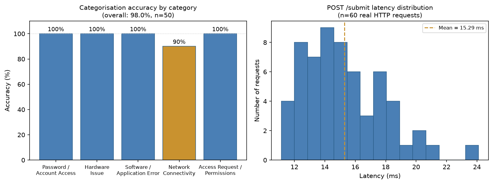

The problem
Users describe symptoms, not causes. A ticket that says only “my account is not working” could be a routine lockout, an application fault or a compromised account, and different agents will route it differently. Inconsistent categorisation leads to reassignment, delay and unreliable reporting.
Research question: how can a simplified ticket categorisation model and a structured triage workflow improve routing consistency and reduce resolution delays in IT helpdesk environments?
Why a rule-based approach
Published studies found that simple, explainable classifiers are often as accurate as complex models on IT ticket text (Revina et al., 2020; Wahba et al., 2020). Rules need no training data, and every decision can be traced back to the keyword that produced it, which supports fairness and auditing.
The design
![Architecture flow diagram. An end user submits a ticket through the Ticket Submission Interface, which passes it to the Categorisation Module. That module writes to a Category and Priority Data Store and passes the ticket to the Triage and Assessment Module, then to Assignment and Escalation, then Ticket Resolution and Status Update, and finally Reporting and Analytics. A Security and Governance Layer spanning all modules contains RBAC, audit logging, encryption, data minimisation and retention controls.](assets/system-architecture.png)
The design is tool-agnostic: an organisation could apply it inside an existing service-desk platform. It defines five standard categories, an impact-and-urgency priority matrix, a separate escalation path for security-sensitive tickets, and reporting fields for reassignment, backlog and resolution time.
Security and ethics are built in from the start: least-privilege access, an audit trail, data minimisation, and a human-review fallback for tickets the rules can’t place, so the system never forces a guess. These follow ISO/IEC 27001 and GDPR principles.
Functional requirements · Non-functional requirements · Triage workflow
The prototype
The project began as a process-design study. With my supervisor’s approval, I added a deliberately small working prototype to prove the core logic of the design, not to build a production helpdesk.
What it does
- Categorises tickets automatically into five categories by keyword matching, and sets priority and a security-sensitive flag:
categorization.py - Masks security-sensitive tickets from first-level agents. The check runs on the server, so restricted text never reaches an unprivileged browser:
app.py - Logs every action (login, logout, submission, queue view) with a timestamp:
models.py - Sends unmatched tickets to human review instead of forcing a category.
Run it locally
Requires Python 3.12 or later.
git clone https://github.com/saikatsunilganguly-cpu/msit5910-helpdesk-capstone
cd msit5910-helpdesk-capstone/prototype
pip install -r requirements.txt
python app.py # then open http://127.0.0.1:5000
python -m pytest # runs all 55 testsDemo logins: agent1 (first-level agent) and idmgmt1 (identity management). The login is username-only by design; see limitations.
Built with
- Python
- Flask
- SQLite
- pytest
- pytest-cov
- Git & GitHub
- Semantic Versioning
- Mermaid
- GitHub Pages
Demo video
Written walkthrough
- Project purpose, target users and the six-module design.
- Development environment: Python, Flask and SQLite, installing dependencies and starting the server.
- Logged in as
agent1, a ticket reading “I’m locked out of my account after resetting my password” is categorised as Password / Account Access, High priority, and flagged security-sensitive. - A hardware ticket is categorised differently, showing that the result depends on the ticket text.
- In the queue, the agent sees the sensitive ticket’s description masked; logged in as
idmgmt1, the full description is visible. - Tie-back: how each part of the demo maps to the architecture and requirements.
Evaluation

| Measure | Method | Result |
|---|---|---|
| Categorisation accuracy | 50 hand-written tickets, 10 per category, written separately from the keyword lists | 98.0% (49/50) |
| Response time | 60 real HTTP submissions, full stack, one user | Mean 15.29 ms, median 14.85 ms |
| Stability | 10 simultaneous users × 30 submissions | 300/300 succeeded, 300 distinct tickets and 300 audit entries; mean 189.6 ms, slowest 4.7 s |
| Usability | Walkthrough against six of Nielsen’s heuristics | Five fully met; error prevention partly met |
The single misclassification, “My laptop shows offline even though others are connected,” went to Hardware Issue instead of Network Connectivity. Each category matched one keyword, and ties go to the category seeded first. Because the cause is known and reproducible, the fix is clear: send ties to human review.
Testing
| Level | Tests | First run | After fixes |
|---|---|---|---|
| Unit (white-box) | 19 | 19 passed | 19 passed |
| Integration | 9 | 9 passed | 9 passed |
| System | 17 | 14 passed, 3 failed | 17 passed |
| Acceptance | 7 | 7 passed | 7 passed |
| Known limitations | 3 | 3 expected failures | 3 expected failures |
Defects found by testing, then fixed
- Ambiguous keyword (v0.2.0): the bare word “reset” sent “reset my monitor settings” to the security-sensitive password category. Fixed with specific phrases and locked in with a regression test.
- Empty tickets (v1.2.0): blank or whitespace-only tickets were stored. The server now rejects them with HTTP 400 and a clear message.
- Queue order (v1.2.0): tickets created in the same second appeared in the wrong order. Ticket id is now a tie-breaker.
Test logs from before and after the fixes: before · after · test code
Scope and what isn’t built yet
The prototype implements three of the six designed modules: ticket submission, categorisation, and the security and governance layer. Of the seven functional requirements, six are partly implemented and one, reporting, is not built.
| ID | Requirement | Status | What exists today |
|---|---|---|---|
| FR1 | Guided categorisation into at least five categories | Partial | Automatic classification into five categories; guided prompts not built |
| FR2 | Structured ticket record | Partial | Impact and urgency combined into one priority value |
| FR3 | Standard triage routing | Partial | Routes by category and priority only |
| FR4 | Flag security-sensitive tickets for escalation | Partial | Flagged and masked; no escalation notification |
| FR5 | Record ticket lifecycle data | Partial | No agent assignment or resolution outcome yet |
| FR6 | Reporting and analytics | Not built | Module remains at design stage |
| FR7 | Role-based access and audit trail | Partial | RBAC and full audit log; assignment changes not audited |
Known limitations (tracked as expected-failure tests)
- KL-01: the demo login has no password. Next step: hashed passwords and MFA.
- KL-02: keyword ties resolve by category order. Next step: route ties to human review.
- KL-03: no CSRF protection on forms. Next step: add tokens.
- Load: the Flask development server with SQLite slows under ten simultaneous users. The deployment plan moves to Docker, gunicorn and a server database.
Release history
Work happens on a development branch and is merged into main at each milestone, which is then tagged following Semantic Versioning.
| Tag | Milestone |
|---|---|
| v0.1.0 | First working prototype: categorisation and role-based access |
| v0.2.0 | Reset-keyword fix and 19-test unit suite |
| v1.0.0 | Release of the tested prototype |
| v1.1.0 | Page templates, 50-ticket test set, evaluation scripts and results |
| v1.2.0 | Integration, system and acceptance tests, two bug fixes, stability test |